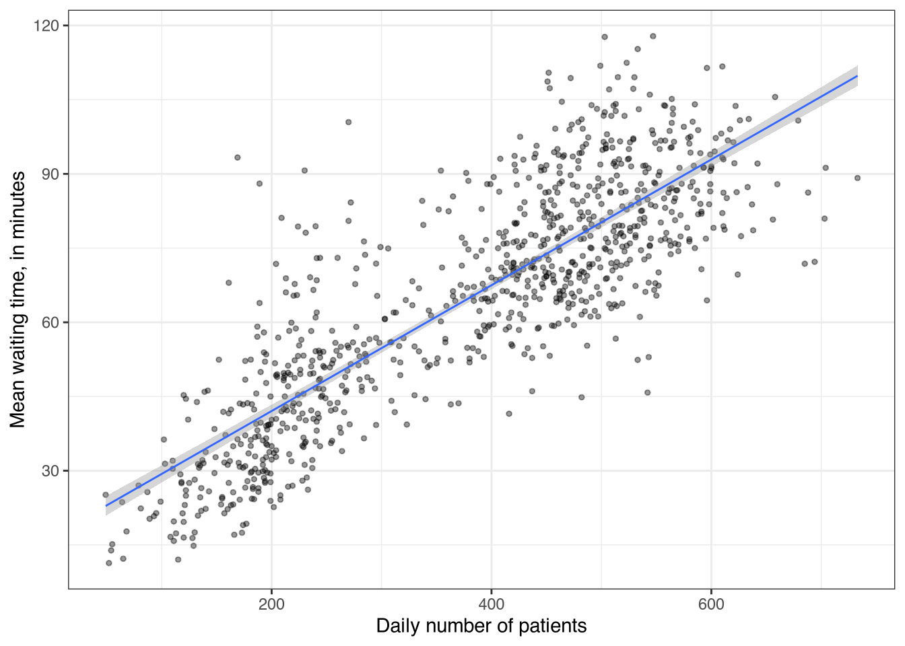
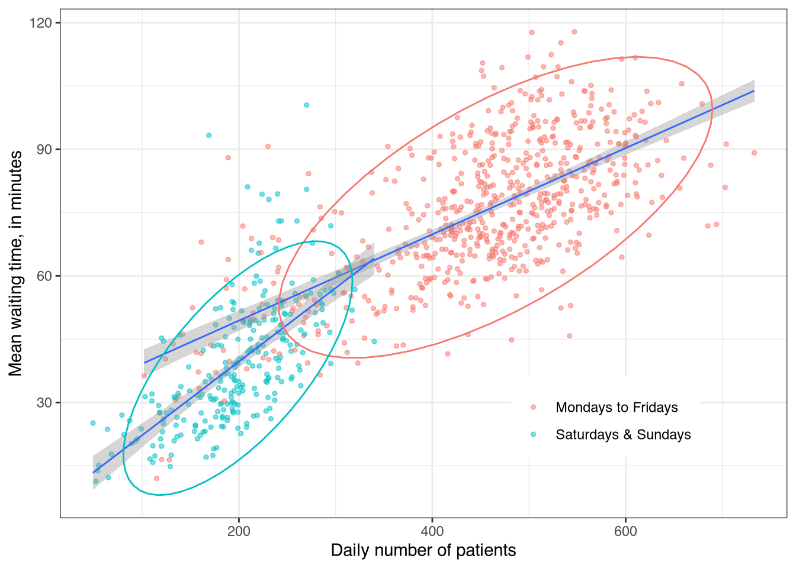
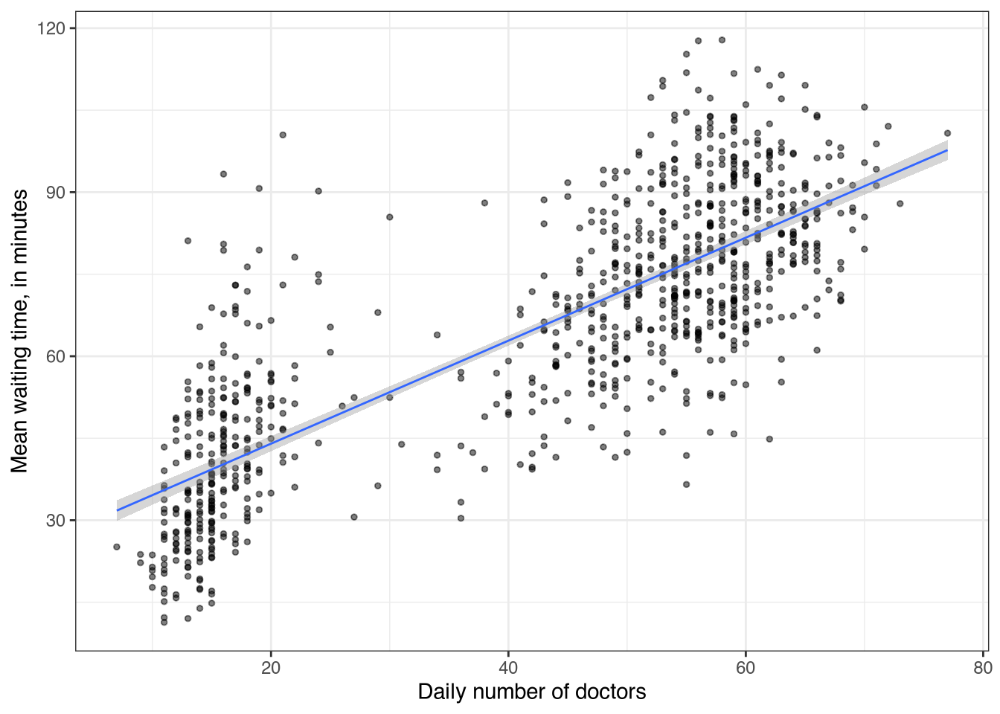
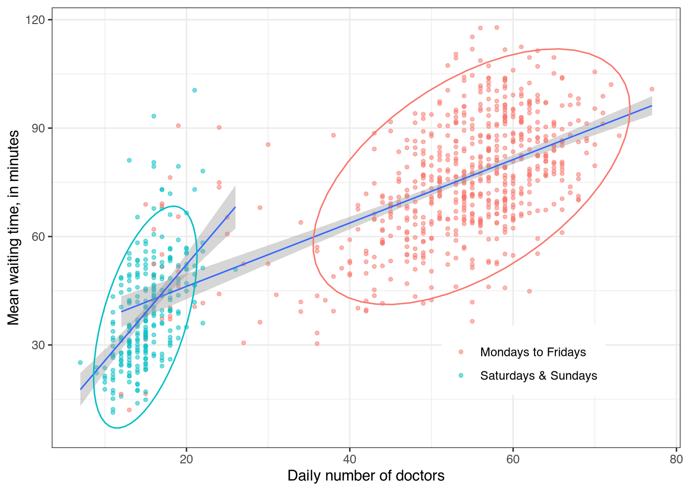
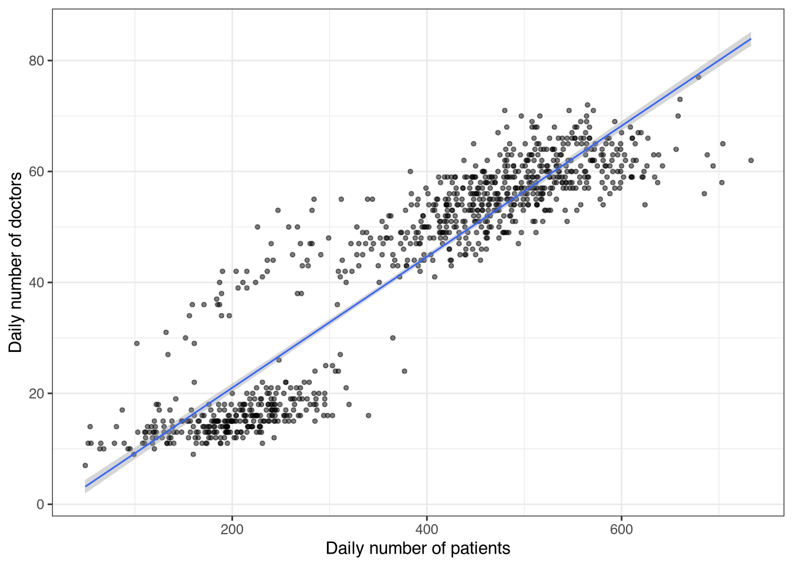
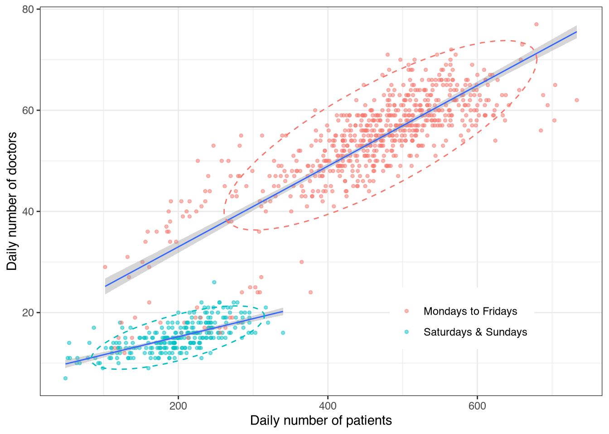
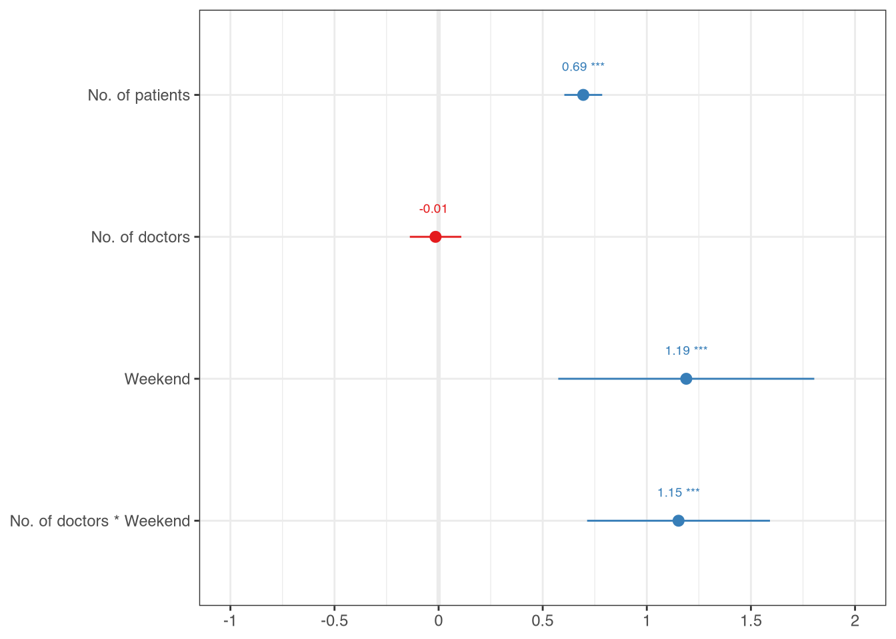

The importance of visualizing your data
The visualization of your data is very important especially during the exploratory stages of data analysis. Data visualization may reveal relationships that may not otherwise be apparent. Also, important results can be communicated lucidly to your audience through graphs and charts.
Consider this data set of 912 observations (Table 1 shows the first 10 rows of the data):
| encounter_date | number_of_patients | number_of_doctors | mean_wait_time |
|---|---|---|---|
| 2020-01-01 | 120 | 15 | 16.49 |
| 2020-01-02 | 402 | 50 | 59.59 |
| 2020-01-03 | 363 | 48 | 43.4 |
| 2020-01-04 | 181 | 15 | 29.6 |
| 2020-01-05 | 130 | 14 | 17.53 |
| 2020-01-06 | 463 | 54 | 64.54 |
| 2020-01-07 | 474 | 55 | 63.67 |
| 2020-01-08 | 442 | 49 | 58.72 |
| 2020-01-09 | 509 | 59 | 62.84 |
| 2020-01-10 | 430 | 55 | 53.56 |
Suppose we wish to examine the hypothesis that there is a relationship between the number of patients checking into the hospital on any given day and the daily average waiting time. We could do that using correlation and report a correlation coefficient. Thus from our data of 362,305 patient records from the hospital’s electronic medical records for the period of January 2020 to June 2022, we can calculate a Pearson’s correlation coefficient of r = 0.84 (95% CI 0.82, 0.85), p < 0.01. This result suggests a strong positive linear relationship between the daily number of patients and the daily average waiting time.
Scatterplots
What do we see when we plot the data i.e. a scatterplot of daily patient number against daily mean waiting time? Figure 1 reveals something interesting. As expected from the correlation coefficient above, the regression line shows a strong positive relationship. However, what stands out is that the data is clustered into two groups suggesting group differences.
If we were to colour the data points by whether the day was a weekend (Saturday or Sunday) or a weekday (Monday to Friday), the nature of the clustering becomes clearer (Figure 2). Also, the slopes of the regression lines are different for weekdays compared to weekends. Respectively the correlation coefficients are r = 0.67 (0.63, 0.71), p < 0.01 for weekdays, and r = 0.64 (0.57, 0.71), p < 0.01 for weekends.


The confounding introduced by whether the day is a regular weekday or a weekend was revealed when we plotted the data. This is confirmed by the decrease in the correlation coefficients when we accounted for weekday. Therefore any subsequent analyses must account for the influence of weekday (see Table 3).
We can reasonably expect that having more doctors on duty might reduce the average waiting time. We can therefore test the hypothesis that there is an inverse relationship between the daily number of available doctors and the daily average waiting time. There is a statistically significant relationship between the number of doctors on duty and the daily average waiting time: r = 0.80 (95% CI 0.77, 0.82), p < 0.01. We can also make a scatterplot of this relationship (Figure 3).


We see here that the clustering by weekday type is even more accentuated. We also see that the relationship between number of doctors and waiting times is in the opposite direction to what we expected. Why is this? It is likely as more patients check into the hospital, more doctors are placed on the roster. In other words, the increase in the number of doctors is a response to increased patient numbers. The correlation coefficients are r = 0.56 (0.5, 0.61), p < 0.01 for weekdays, and r = 0.53 (0.43, 0.61), p < 0.01 for weekends. Again highlighting the confounding imposed by weekend or weekday. It is possible that there is an interaction effect between the number of doctors on duty and weekday type: there will be relatively less doctors on duty given the same number of patients on weekends compared to weekdays.
This leads us to consider the relationship between daily patient numbers and daily number of doctors on the roster (Figure 4). The difference between weekdays and weekends is even more pronounced. The point and interval estimates for the overall correlation coefficient is r = 0.92 (0.91, 0.93) while they are r = 0.82 (0.8, 0.85) for weekdays, and r = 0.67 (0.59, 0.73) for weekends respectively.


Regression models
We now arrive at the point where we can attempt to develop an explanatory model for daily average waiting time (Equation 1):
\[ \begin{aligned} y = \beta_0 &+ \beta_{1} \times \text{daily patient number} + \beta_{2} \times \text{daily doctor number}\\ &+ \beta_{3} \times \text{weekend} + \epsilon \end{aligned} \tag{1}\]
Where:
- \(y\) = daily average waiting time
- \(\beta_0\) = constant term
- \(\beta_1\), \(\beta_2\), \(\beta_3\) = regression coefficients, and
- \(\epsilon\) = residual error term
| B | SE | t | p | |
|---|---|---|---|---|
| (intercept) | 26.27 | 2.426 | 10.83 | <0.001 |
| number of patients | 0.109 | 0.007 | 15.42 | <0.001 |
| number of doctors | -0.011 | 0.076 | -0.15 | 0.881 |
| weekends | -8.425 | 1.997 | -4.22 | <0.001 |
| N | 912 | |||
| \(R^2\) | 0.71 | |||
| adjusted \(R^2\) | 0.709 | |||
| AIC | 7200 |
The results of the linear regression model are shown in Table 2. On average patients will wait about 8 minutes less on weekends. The model shows that there is not a statistically significant relationship between the number of doctors and daily average waiting time after adjusting for the effects of number of patients and weekend. So the earlier relationship we found for the relationship between the number of doctors and daily average waiting time is spurious.
The adjusted \(R^2 = 0.709\) suggests that this model explains about 71% of the variation in the data. Does the performance of the model improve if we include the interaction between weekend and number of doctors (Equation 2)? The results in Table 3 suggest there is only a marginal improvement (adjusted \(R^2 = 0.717\)), however the ANOVA test comparing the two models (not shown) indicates this second model is better. We can plot the standardized coefficients as a forest plot (Figure 5) to show which variable has the most influence on daily average time.
\[ \begin{aligned} y = \beta_0 &+ \beta_{1} \times \text{daily patient number} + \beta_{2} \times \text{daily doctor number}\\ &+ \beta_{3} \times \text{weekend} + \beta_{4} \times \text{daily doctor number}\cdot\text{weekend} +\epsilon \end{aligned} \tag{2}\]
| B | SE | t | p | |
|---|---|---|---|---|
| (intercept) | 28.34 | 2.426 | 11.68 | <0.001 |
| number of patients | 0.106 | 0.007 | 15 | <0.001 |
| number of doctors | -0.017 | 0.074 | -0.23 | 0.816 |
| weekends | -30.29 | 4.68 | -6.47 | <0.001 |
| number of doctors · weekend | 1.363 | 0.265 | 5.15 | <0.001 |
| N | 912 | |||
| \(R^2\) | 0.719 | |||
| adjusted \(R^2\) | 0.717 | |||
| AIC | 7176 |
The weekday is the most influential variable on average waiting time, having the largest standardized coefficient \(\beta = 1.19\) while there is also a statistically significant interaction effect between the number of doctors and whether it is a weekend or not.

But then this confirms what we can already infer from observation and commonsense. Patients spend longer minutes waiting when there are more of them. The number of doctors on duty increases in response to increased patient numbers but does not improve the waiting time. There are less doctors available on weekends.